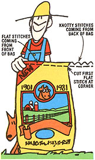

Any livestock owner will agree that opening (or ripping apart, as is more often the case) grain-filled bags in order to give your animals their rations can sometimes be a moming's chore in itself! However, I've discovered the secret to unlocking the bags. And my time-saving (and fodder-saving) trick is so easy that even an all-thumbs homesteader will find that it works every time!
If you closely examine the gunnysack, you'll notice that the stitches on one side of the receptacle are "flat", while the seam on the opposite edge of the cloth container has a knotty appearance. You'll want to face the fodder sack so that the flat stitches are on the right-hand side as you look at the edge of the bag. Once the feed sack is so situated, find the first flat stitch in the right-hand corner. (This string "unzips" the opening.) Cut this tie off at the corner and lift out the first few loops, using a knife or a fingernail.
Next, to open the bag, grasp the just-sliced lace in one hand and hold the opposite string on the knotty side of the sack in the other hand . . . then gently pull on both strands. If you're doing this step correctly, the seam should easily unravel.
This simple trick will help you to feed your livestock in record time, and will leave you with an intact - and thus useful - feedbag as well!
|
 |
|
|